Kubernetes Multinode on Azure
Launch Login Node
Prepare User Data
When launching a login node it is worth considering what user data options to provide. While it is not required, user data can provide powerful customisation at launch that can further streamline the cluster build process.
There are several options that can be added to change how a compute node will contact nodes on startup.
- Sharing public ssh key to clients:
- Instead of manually obtaining and sharing the root public SSH key (passwordless root ssh is required for flight profile) this can be shared over the local network with
SHAREPUBKEY=true
- Instead of manually obtaining and sharing the root public SSH key (passwordless root ssh is required for flight profile) this can be shared over the local network with
- Add an auth key:
- Add the line
AUTH_KEY=<string>. This means that the node will only accept incoming flight hunter nodes that provide a matching authorisation key
- Add the line
#cloud-config
write_files:
- content: |
SHAREPUBKEY=true
AUTH_KEY=banana
path: /opt/flight/cloudinit.in
permissions: '0644'
owner: root:root
Info
More information on available user data options for Flight Solo via the user data documentation
Deploy
To set up a cluster, you will need to import a Flight Solo image.
-
Go to the Microsoft Azure portal.
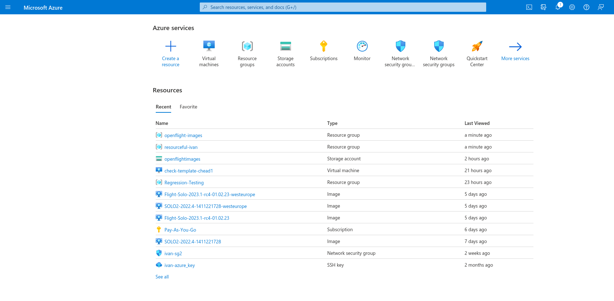
-
Go to Virtual Machines, and click "Create".
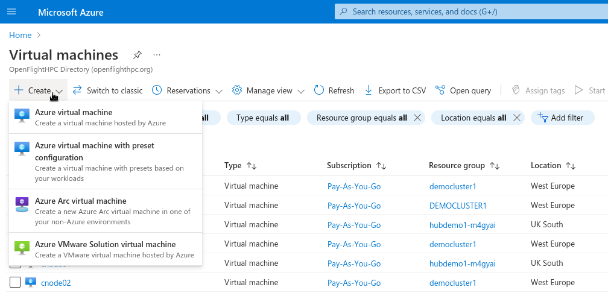
-
Select "Azure virtual machine", which will load this page:
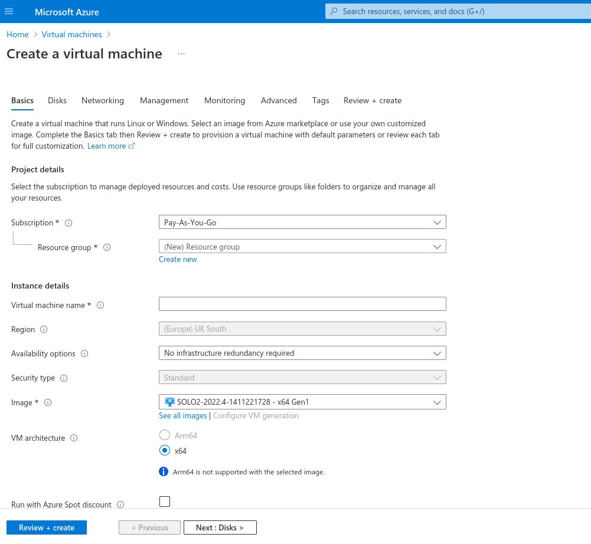
-
On the Basics page:
- Set Subscription to your subscription type.
- Set Resource Group to your desired resource group (where the vm will be kept after creation).
- Set Virtual machine name to any suitable name. (
-does not work in a name) - Set Image to the imported Flight Solo Image.
- It may be necessary to open the dropdown and/or see all images in order to find the imported image. 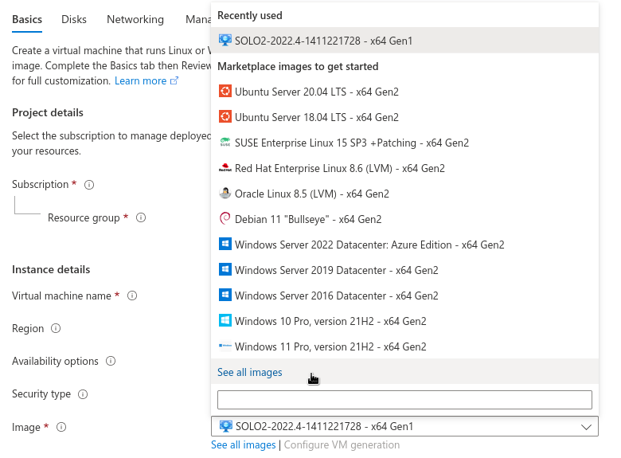
- Scroll down to see more options 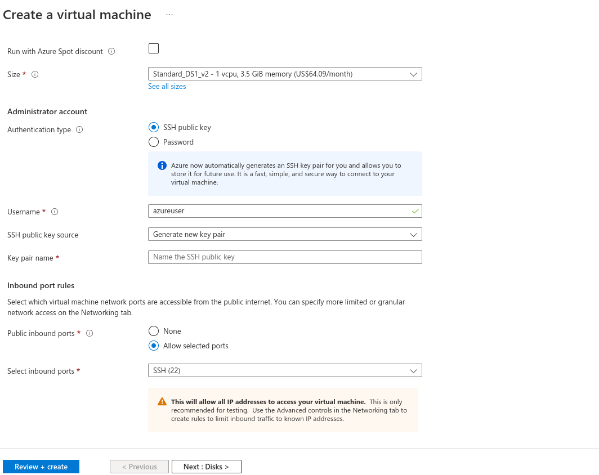
- Set Size to your choice of size.
- Set Authentication type to
SSH public key - Set Username to any suitable username.
- Set SSH public key source to the most suitable option, but remember what key was used if creating compute nodes later.
- Fill in the Key pair name/Stored key/Use existing key as appropriate to the chosen public key source.
- Allow traffic to selected ports, and select
SSH(22),HTTP(80)andHTTPS(443)as the allowed ports. - Set the most appropriate license type.
-
Continuing on to the next page, Disks, all necessary details should already be filled out, so this page can be skipped (unless you know what you want to change). However, it is recommended to select Delete with VM.
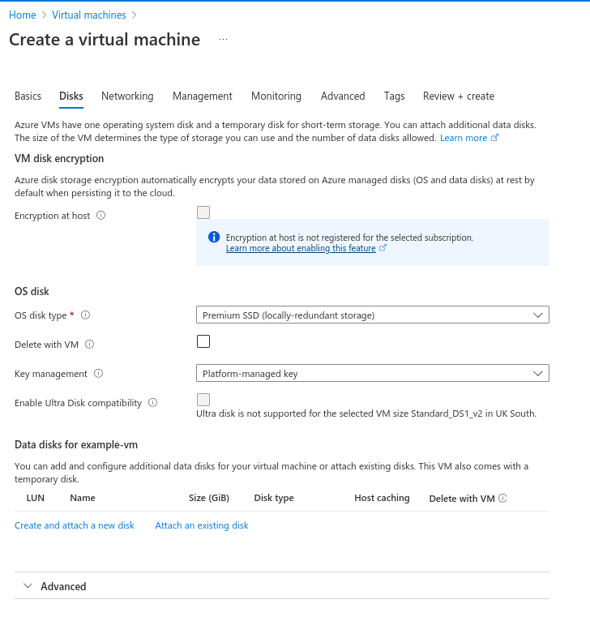
-
Go on to the networking tab and fill out the necessary options.
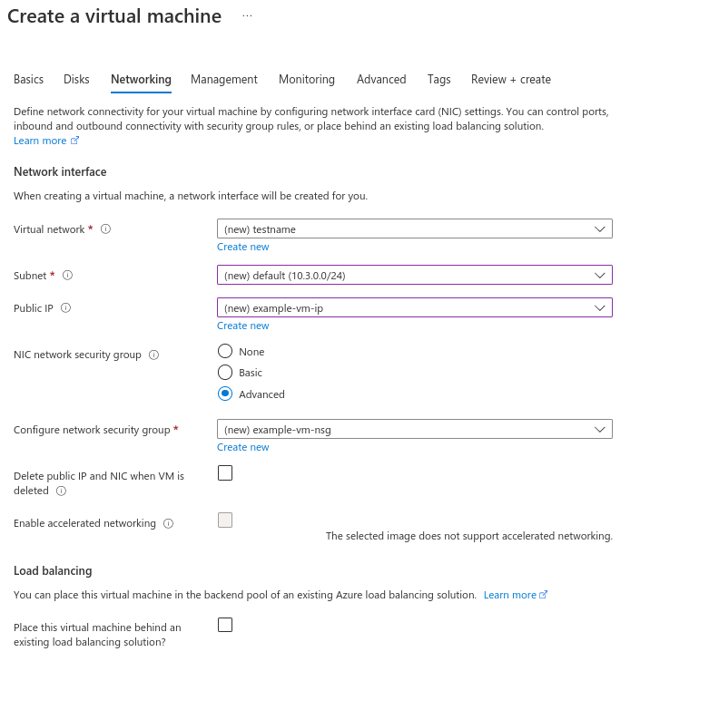
- Set Virtual Network or create a new one by pressing "Create new" and setting a name. Remember what this is for if you create compute nodes.
- Set Subnet to one of the options in the dropdown menu, if it isn't already set. Remember what this is for if you create compute nodes.
- Set Public IP to an existing public IP or create a new one by pressing "Create new" and setting a name.
- Set NIC network security group to "Advanced", and press "Create new" to create a new security group.
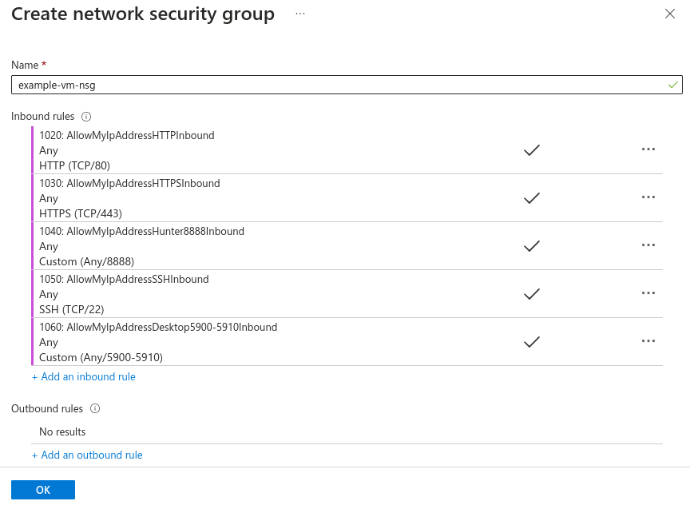
- Click on "Add an inbound rule" to open the inbound rule creator 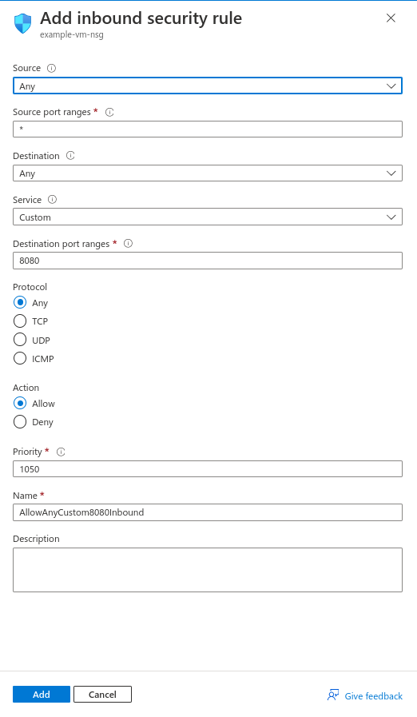
- Create rules to allow
HTTP,HTTPSandSSHtraffic from your IP address to the security group. - When complete, press "OK" at the bottom left of the screen to return to image creation.
-
The Management, Monitoring and Tags tabs have more options that aren't necessary for setup. Skip to the tab Advanced
-
In the Custom data and cloud init section, there is a text box. This is where your user data can be specified
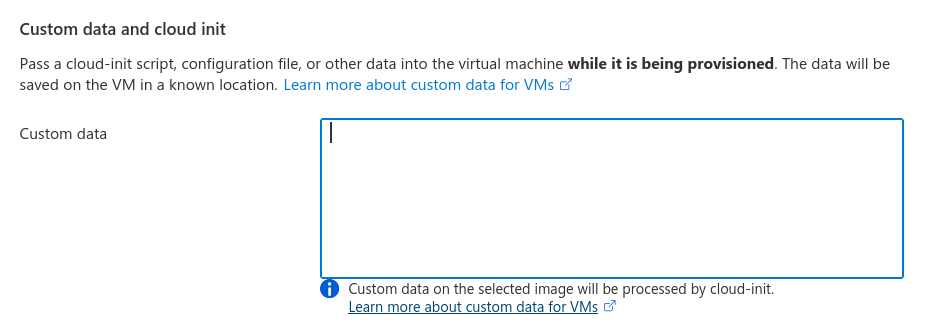
-
Azure will take some time to review your settings. If there are no issues click "Create" to finish creation.
Launch Compute Nodes
Prepare User Data
Setting up compute nodes is done slightly differently than a login node. The basic steps are the same except subnets, networks and security groups need to match the ones used for the login node.
This is the smallest amount of cloud init data necessary. It allows the login node to find the compute nodes as long as they are on the same network, and ssh into them from the root user (which is necessary for setup).
#cloud-config
users:
- default
- name: root
ssh_authorized_keys:
- <Content of ~/.ssh/id_alcescluster.pub from root user on login node>
Tip
The above is not required if the SHAREPUBKEY option was provided to the login node. If this was the case then the SERVER option provided to the compute node will be enough to enable root access from the login node.
There are several options that can be added to change how a compute node will contact nodes on startup.
- Sending to a specific server:
- Instead of broadcasting across a range, add the line
SERVER=<private server IP>to send to specifically that node, which would be your login node.
- Instead of broadcasting across a range, add the line
- Add an auth key:
- Add the line
AUTH_KEY=<string>. This means that the compute node will send it's flight hunter packet with this key. This must match the auth key provided to your login node
- Add the line
#cloud-config
write_files:
- content: |
SERVER=10.10.0.1
AUTH_KEY=banana
path: /opt/flight/cloudinit.in
permissions: '0644'
owner: root:root
users:
- default
- name: root
ssh_authorized_keys:
- <Content of ~/.ssh/id_alcescluster.pub from root user on login node>
Info
More information on available user data options for Flight Solo via the user data documentation
Deploy
-
Go to the Microsoft Azure portal.
-
Go to Virtual Machines, and click "Create".
-
Select "Azure virtual machine", which will load this page:
-
On the Basics page:
- Set Subscription to your subscription type.
- Set Resource Group to the same as the login node
- Set Virtual machine name to any suitable name.
- Set Image to the imported Flight Solo Image.
- It may be necessary to open the dropdown and/or see all images in order to find the imported image.
- Scroll down to see more options
- Set Size to your choice of size.
- Set Authentication type to
SSH public key - Set Username to the same username as with the login node.
- Set SSH public key source to the same key that was used for the login node.
- Fill in the Key pair name/Stored key/Use existing key as appropriate to the chosen public key source.
- Allow traffic to selected ports, and select
SSH(22,HTTP(80)andHTTPS(443)as the allowed ports. - Set the most appropriate license type.
-
Continuing on to the next page, Disks, all necessary details should already be filled out, so this page can be skipped (unless you know what you want to change). However, it is recommended to select Delete with VM.
-
Go on to the networking tab and fill out the necessary options.
- Set Virtual Network to the same network that was used for the login node.
- Set Subnet to the same subnet that was used for the login node.
- Set NIC network security group to the same subnet that was used for login node.
- When complete, press "OK" at the bottom left of the screen to return to image creation.
-
The Management and Monitoring tabs have more options that aren't necessary for setup. Skip to the Advanced tab.
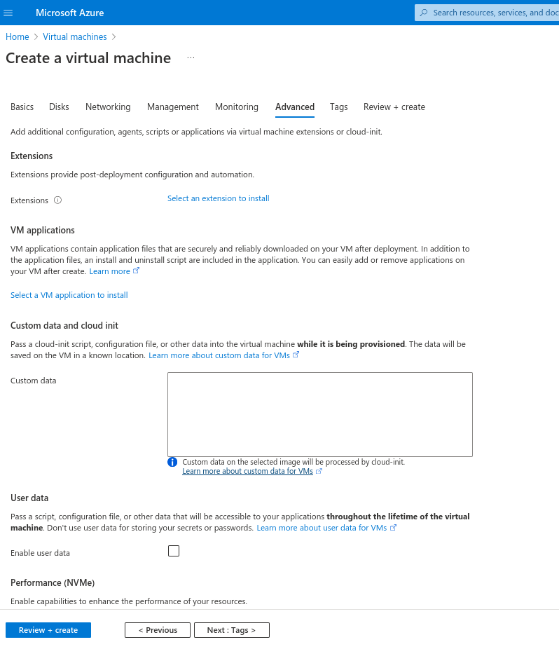
-
In the Custom data and cloud init section, there is a text box. Write a cloud init script as prepared earlier in the custom data section
-
Skip to the Review + Create section. Azure will take some time to review your settings. If there are no issues click "Create" to finish creation.
General Configuration
Create Node Inventory
-
Parse your node(s) with the command
flight hunter parse.-
This will display a list of hunted nodes, for example
[flight@login-node.novalocal ~]$ flight hunter parse Select nodes: (Scroll for more nodes) ‣ ⬡ login-node.novalocal - 10.10.0.1 ⬡ compute-node-1.novalocal - 10.10.101.1 -
Select the desired node to be parsed with Space, and you will be taken to the label editor
Choose label: login-node.novalocal -
Here, you can edit the label like plain text
Choose label: login1Tip
You can clear the current node name by pressing Down in the label editor.
-
When done editing, press Enter to save. The modified node label will appear next to the ip address and original node label.
Select nodes: login-node.novalocal - 10.10.0.1 (login1) (Scroll for more nodes) ‣ ⬢ login-node.novalocal - 10.10.0.1 (login1) ⬡ compute-node-1.novalocal - 10.10.101.1 -
From this point, you can either hit Enter to finish parsing and process the selected nodes, or continue changing nodes. Either way, you can return to this list by running
flight hunter parse. -
Save the node inventory before moving on to the next step.
Tip
See
flight hunter parse -hfor more ways to parse nodes.
-
Add genders
- Optionally, you may add genders to the newly parsed node. For example, in the case that the node should have the gender
clusterandallthen run the command:flight hunter modify-groups --add cluster,all login1
Kubernetes Multinode Configuration
-
Configure profile
1. This brings up a UI, where several options need to be set. Use up and down arrow keys to scroll through options and enter to move to the next option. Options in brackets coloured yellow are the default options that will be applied if nothing is entered. - Cluster type: The type of cluster setup needed, in this caseflight profile configureOpenflight Kubernetes Multinode. - Cluster name: The name of the cluster. - Default user: The user that you log in with. - IP range of compute nodes: The IP range of the compute nodes used, remember to add the netmask. E.g.172.31.16.0/20- IP range of Kubernetes pods: The IP range that the kubernetes pods should use, make sure this is different from the IP range of the compute nodes, and remember to add the net mask. E.g.192.168.0.0/16 -
Apply identities by running the command
flight profile apply- First apply an identity to the login node
flight profile apply login1 master -
Wait for the login node identity to finish applying. You can check the status of all nodes with
flight profile list.Tip
You can watch the progress of the application with
flight profile view login1 --watch -
Apply an identity to the each of the compute nodes. E.g.
flight profile apply node01,node02 workerTip
You can check all available identities for the current profile with
flight profile identities
- First apply an identity to the login node
Success
Congratulations, you've now created a Kubernetes Multinode environment! Learn more about Kubernetes in their documentation.